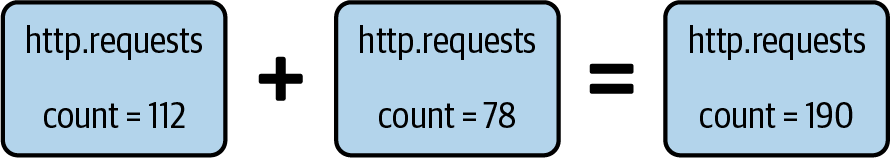
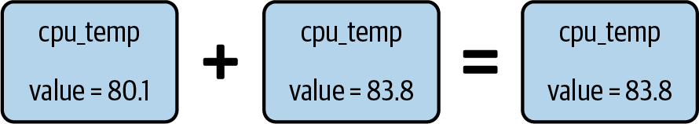
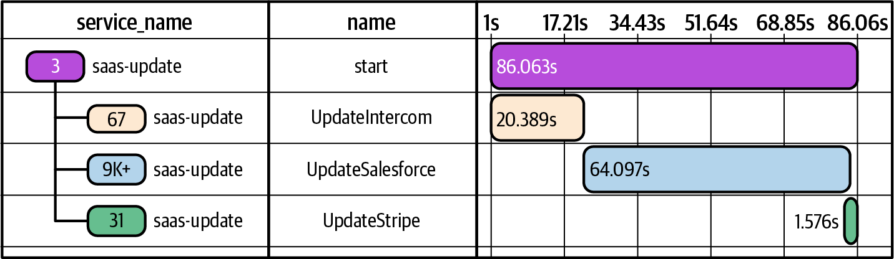
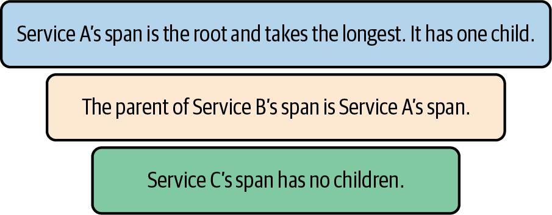
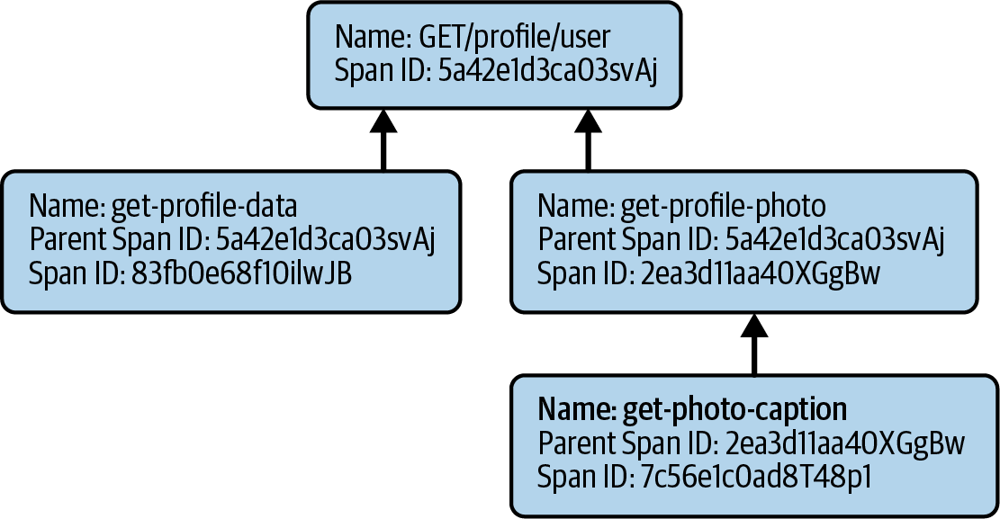

<title>第 5 章　結構化事件是可觀測性的基本構件 — 《可觀測性工程》第二版</title>
<link rel="stylesheet" href="style.css">

<nav class="chapnav">
    <a href="ch04.html">← 上一章</a>
    <a href="index.html">目錄</a>
    <a href="ch06.html">下一章 →</a>
  </nav>
<main>
  <header class="masthead">
    <span class="eyebrow">Observability Engineering · Second Edition</span>
    
    <h1 class="title serif">第 5 章<br>結構化事件是可觀測性的基本構件</h1>
    <div class="rule"></div>
  </header>

  <p>在第一部中，我們介紹了三大支柱與可觀測性統一模型之間的差異。在本章中，我們將說明這種統一是如何實現的，並拆解一個迷思：標準可觀測性遙測訊號——日誌、指標與追蹤——本質上必須被當作不同的資料型別來管理。</p>
<p>多年來，我們軟體工程師被教導要透過不同的鎖孔來瞇眼觀察我們的系統：用指標做脈搏檢查、用日誌看敘事、用追蹤看複雜行為的延伸視角。這些視角各自擁有自己的工具、慣例與教條，把每一種都當作根本不同的資料類型，分別收集並儲存在各自獨立的孤島中。但這種切割所造成的問題並不僅止於哲學層面。你所收集資料的形狀，會限制你日後能提出的問題。當你預先決定了資料的形狀，也就等於預先決定了調查的方向。</p>
<p>然而，這種阻礙除錯能力的孤島式切割，其實只是一種歷史遺留產物。不幸的是，許多軟體工程師尚未完全意識到這一點，因為透過不同的鎖孔瞇眼觀察，是我們自從開始寫程式以來所知道的唯一方法。與其收集同一系統狀態的三種不同表示形式，我們其實可以主要捕捉一種脈絡豐富的表示形式（寬而結構化的事件），並依需求從這單一記錄按需產生出我們所需的相應視角（指標、日誌或追蹤）。</p>
<p>與其只是空談，不如實際展示。因此，在接下來的兩章中，我們將深入拆解各種可觀測性遙測資料型別的結構、優點與限制。接著我們會說明如何使用單一共通的基底——包含大量屬性的結構化事件（統一可觀測性的基本構件）——來重新建構這些資料型別。在本章中，我們將聚焦於檢視</p>
<p>常見資料格式（即「結構化事件」）。接著在下一章，我們將說明如何讓結構化事件變得更有用，也就是讓它盡可能包含大量屬性。</p>
<p>本章的主要貢獻者 Jeremy Morrell 也是下一章的特約作者。</p>
<h2 class="section serif">什麼是結構化事件？</h2>
<p>要理解結構化事件，必須先了解其組成部分。讓我們從定義「事件」開始。這是軟體開發中常見的術語，更不用說在可觀測性領域了。這個詞被過度使用，帶有各種不同的含義。因此，我們會依上下文來界定其意義。</p>
<p>「事件」是應用程式發出的任何一筆資料。當你登入終端機時，輸出到stdout 的字元緩衝區也可以視為一個事件（雖然它只是編碼單一值——訊息——的自由格式文字）。就實務而言，事件是系統中某個工作單元內所發生一切事情的紀錄。</p>
<p>「結構化事件」是可以被解析為一組鍵值對的事件，其中可能包含多個值。為了說明起見，你可以把一個事件想像成一個沒有巢狀欄位的 JavaScript Object Notation（JSON）物件：</p>
<pre class="code">{
  <span class="tok-string">"timestamp"</span>: <span class="tok-string">"6:00:00"</span>,
  <span class="tok-string">"user_id"</span>: <span class="tok-string">"123"</span>,
  <span class="tok-string">"user_action"</span>: <span class="tok-string">"signup"</span>,
  <span class="tok-string">"referral"</span>: <span class="tok-keyword">false</span>
}</pre>
<p>為了說明這些資料如何被儲存、以及這如何影響後續你能提出的問題，讓我們也想像一下該事件若寫成資料庫記錄會是什麼樣子，其中每個欄位對應到資料庫表格中的一個欄位。這裡我們會再加入第二筆類似的事件，它是在幾秒鐘後發生的：</p>
<figure class="plate">
<div class="table-wrap">
<table class="datatable">
<thead><tr><th>timestamp</th><th>user_id</th><th>user_action</th><th>referral</th></tr></thead>
<tbody><tr><td>6:00:00</td><td>123</td><td>signup</td><td>false</td></tr><tr><td>6:00:03</td><td>456</td><td>checkout</td><td>true</td></tr></tbody>
</table>
</div>
</figure>
<p>以這種方式看待事件已經足夠通用，讓我們能有效地為三大支柱資料型別（指標、日誌與追蹤）各自建立模型，以更深入理解它們的限制、內部運作方式，以及該如何重新思考它們。</p>
<h2 class="section serif">指標的限制</h2>
<p>為了理解指標的限制，首先我們必須釐清指標到底是什麼。讓我們先為「指標」這個詞消除歧義。可惜的是，這個詞有時被當成「遙測」的通用同義詞來使用（例如：「老闆，我們所有的指標都在往上衝！」）。在本書中，我們將「指標」理解為：用來代表系統狀態的純量值，通常儲存在時間序列資料庫中。</p>
<h2 class="section serif">什麼是指標？</h2>
<p>1988 年，透過簡單網路管理協定（SNMPv1，定義於 RFC 1157），監控的基礎素材就此誕生：指標。指標是一個單一數值，可選擇性地附加標籤，用以對這些數值進行分組與搜尋。就其本質而言，指標是可拋棄且廉價的。它們有可預測的儲存空間需求，也很容易依照規律的時間序列區間進行彙總。因此，指標成為一兩個世代遙測資料的基本單位——也就是我們從遠端端點蒐集、自動傳送至監控系統的資料。</p>
<p>指標資料系統的設計目的，是在固定的週期性間隔（例如每 60 秒）有效率地蒐集並彙總某些數值。這些數值用來追蹤系統某方面隨時間的變化：</p>
<p>• 服務了多少個 HTTP 請求？</p>
<p>• 有多少個 HTTP 請求得到 500 狀態碼的回應？</p>
<p>• CPU 使用率為何？</p>
<p>• 最慢的回應時間是多少？</p>
<p>值得注意的是，早在 1980 年代最初的指標系統開發出來時，電腦系統可用的記憶體、儲存空間與頻寬都比現在少了好幾個數量級。正因為這樣的歷史淵源，指標最優先考量的，就是降低資料量與資源使用量。</p>
<p>一個指標需要幾項資訊：</p>
<dl class="deflist"><dt>時間戳記</dt><dd>由於我們每 60 秒才蒐集一次數值，因此可以將時間戳記四捨五入到最接近區間的起始點（例如 6:16:23 =&gt; 6:16:00）。</dd><dt>名稱</dt><dd>用來描述所追蹤數值的名稱，例如 http.request.count 或 cpu.utilization。</dd><dt>測量值</dt><dd>隨時間追蹤的值，通常（但不一定）以單一數字擷取。</dd><dt>類型</dt><dd>給定一組指標記錄，指標系統需要知道如何將它們合併（下一節會詳細說明）。</dd><dt>屬性集合</dt><dd>也稱為標籤，是一組選填的鍵值對，用於添加額外的上下文（例如sensor_id、server_id、region 等）。</dd></dl>
<p>綜合以上這些資訊，就會建立出一筆單一的指標記錄。作為結構化事件，它可能會像這樣呈現：</p>
<pre class="code">{
  timestamp: <span class="tok-string">"6:00:00"</span>,
  <span class="tok-keyword">type</span>: <span class="tok-string">"count"</span>,
  name: <span class="tok-string">"http.request.count"</span>,
  value: <span class="tok-number">212</span>,
  server_id: <span class="tok-string">"web.1"</span>,
  region: <span class="tok-string">"north_america"</span>
}</pre>
<p>值得一提的是，在 OpenTelemetry 中，指標在傳輸過程中幾乎完全是以這種「指標事件」的形式建模的（詳見第 7 章）。</p>
<h2 class="section serif">指標通常是經過聚合的</h2>
<p>指標記錄與其他事件類型不同，因為它們通常會被合併。所有名稱、屬性集合相同，且落在同一時間區間內的指標記錄，都會被聚合成單一一筆記錄。</p>
<p>舉例來說，如果你正在追蹤服務處理了多少個 HTTP 請求，可以使用「計數器（counter）」指標（見圖 5‑1）。你的服務的每個實例都會產生不同的值，接著這些值會被加總，以得出每一分鐘區間內所服務的請求總數。</p>
<figure class="plate">
<figcaption>圖 5‑1。此範例展示計數器指標如何將 http.requests 在同一時間區間內的各種測量值透過加總方式聚合起來。</figcaption></figure>
<p>另舉一個聚合的例子，假設你每 10 秒讀取一次溫度感測器，那麼每分鐘會有6 筆測量值。可以透過只保留最後一個值、捨棄其他值，將這些數據聚合為「gauge（量表）」指標（見圖 5‑2）。gauge 指標是一種可上升也可下降的時間序列值，用來表示會波動的數值。</p>
<figure class="plate">
<figcaption>圖 5‑2　與只會遞增的 counter 指標不同，gauge 可以任意增加或減少，用來擷取特定時間點的瞬時值。</figcaption></figure>
<p>聚合存在一些固有的限制。舉一個無法運作的測量範例，假設你收到的資料是每分鐘、每個服務實例的平均 http.response 時間如下：</p>
<figure class="plate">
<div class="table-wrap">
<table class="datatable">
<thead><tr><th>Timestamp</th><th>Server</th><th>Response time (ms)</th></tr></thead>
<tbody><tr><td>6:00:00</td><td>web.1</td><td>120</td></tr><tr><td>6:00:00</td><td>web.2</td><td>230</td></tr><tr><td>6:00:00</td><td>web.3</td><td>200</td></tr></tbody>
</table>
</div>
</figure>
<p>以這種形狀的資料，你能回答哪些問題呢？舉例來說，如果你問這個服務整體（跨所有實例）的平均回應時間是多少，你能得到正確的答案嗎？</p>
<p>你可能會想直接把所有數值平均起來，說這個服務的平均回應時間是 183 毫秒。然而，這種過於簡化的做法有問題，因為每個聚合後的測量值可能包含不同數量的資料點。遺憾的是，一旦你透過取平均把資料聚合而遺失了原始資料，就沒有任何在數學上站得住腳的方式可以把這些測量值重新組合起來。</p>
<p>平均值是可以再取平均的，但前提是各組的資料點數量相同；否則你必須使用加權平均才能得到正確的整體平均值（而這需要知道那些已遺失的資料點）。如果各組的資料點數量不同（例如 web.1 有 100 個請求、web.2 有 57 個、web.3 有 98 個），那麼對這些平均值做不加權的平均會嚴重失真，因為它讓每一組的平均值獲得同等權重，而不論該組的資料量大小。</p>
<p>如果你事先預料到這個問題，你可以改為收集兩個略有不同的值來揭露這項資訊，例如請求數量，以及服務每個請求所花費的總時間，如下所示：</p>
<figure class="plate">
<div class="table-wrap">
<table class="datatable">
<thead><tr><th>Server</th><th>Requests</th><th>Total response time (ms)</th></tr></thead>
<tbody><tr><td>web.1</td><td>100</td><td>12,000</td></tr><tr><td>web.2</td><td>57</td><td>13,110</td></tr><tr><td>web.3</td><td>98</td><td>19,600</td></tr></tbody>
</table>
</div>
</figure>
<p>有了這些未經聚合的值，你就能算出每個實例的平均回應時間，也能將它們全部合併起來，得出準確的平均回應時間 175 毫秒。「直方圖（histogram）」這種指標類型正是為了實現這類資料擷取而設計的。</p>
<p>有了正確的指標，你就能得到你需要的答案。不過，這需要一些猜測。你可能只是收集了各實例的平均回應時間，因為看起來已經夠用了。你甚至可能一直沒意識到自己需要知道整個服務跨所有實例的平均回應時間是多少，直到某次特定的調查需要這個答案為止。</p>
<p>如果你在需要這個答案之前，沒想到要先設好直方圖指標，那麼現在也無法回頭取得資料了。你能做的最多就是設好它以供未來使用，並期望有朝一日還會需要問同樣的問題。</p>
<p>聚合是區分指標的關鍵特性，也正是這一點讓指標在使用上極為經濟實惠。然而，也正是聚合這個特性，在你不預先知道該聚合什麼的情況下，妨礙了詳細的分析。指標最初是為了因應資源極度受限的系統而發展出來的一種變通方式，這代表它們在設計上大幅偏向降低成本，卻犧牲了可除錯性。這可能是正確的取捨，而且在資料儲存與資料傳出成本較高的年代，這一直是正確的做法。</p>
<h2 class="section serif">日誌的內部運作原理</h2>
<p>當指標無法提供足夠的脈絡時，身為開發者，我們往往會轉而求助於日誌。日誌對於除錯來說相當直觀。它們通常是開發者最早學到的東西之一。我們從「Hello, world!」開始，之後日誌便一直伴隨我們。</p>
<p>日誌檔本質上是大量非結構化文字的集合，設計上是為了讓人類可讀，但機器難以處理。這些檔案是由應用程式以及各種底層基礎設施系統所產生的文件，其中記錄了所有值得注意的事件——這些事件的定義來自某處的一份設定檔——記錄了所有已發生的事件。</p>
<p>數十年來，日誌一直是任何環境中系統除錯應用程式不可或缺的一部分。日誌通常包含大量有用的資訊：對所發生事件的描述、相關聯的時間戳記、與該事件關聯的嚴重程度等級類型，以及各式各樣其他相關的中繼資料（用戶 ID、IP 位址等）。</p>
<p>傳統日誌是非結構化的，因為它們的設計目的是讓人類可以閱讀。不幸的是，為了讓人類易於閱讀，日誌通常會把單一事件的詳細資訊拆散在多行文字中，如下所示：</p>
<pre class="code"><span class="tok-number">6</span>:<span class="tok-number">01</span>:<span class="tok-number">00</span> accepted connection on port <span class="tok-number">80</span> <span class="tok-keyword">from</span> <span class="tok-number">10.0.0.3</span>:<span class="tok-number">63349</span>
<span class="tok-number">6</span>:<span class="tok-number">01</span>:<span class="tok-number">03</span> basic authentication accepted <span class="tok-keyword">for</span> user: foo
<span class="tok-number">6</span>:<span class="tok-number">01</span>:<span class="tok-number">15</span> processing request <span class="tok-keyword">for</span> /<span class="tok-keyword">super</span>/slow/path
<span class="tok-number">6</span>:<span class="tok-number">01</span>:<span class="tok-number">18</span> request succeeded, sent response code <span class="tok-number">200</span>
<span class="tok-number">6</span>:<span class="tok-number">01</span>:<span class="tok-number">19</span> closed connection to <span class="tok-number">10.0.0.3</span>:<span class="tok-number">63349</span></pre>
<p>你可能已經習慣在本地開發環境中看到這樣的日誌，因為在那裡通常會有一條針對單一測試請求的連續日誌串流。我們往往會學會日誌的預期順序與模式，並在出現異常狀況時察覺到。雖然這在本地開發環境中運作得不錯，但這種做法在大規模的生產環境中除錯時往往會失效。將日誌視為結構化資料有助於我們理解為什麼會這樣。</p>
<p>我們可以分別取出時間戳記與訊息，將這些內容對應成結構化事件：</p>
<pre class="code">{
“timestamp: “<span class="tok-number">2024</span>”,
“user_id”: “<span class="tok-number">630630</span>”,
“action: checkout_completed”,
[...]
}</pre>
<p>我們可以把磁碟上的這組日誌想成以下這個表格：</p>
<figure class="plate">
<div class="table-wrap">
<table class="datatable">
<thead><tr><th>timestamp</th><th>message</th></tr></thead>
<tbody><tr><td>6:01:00</td><td>accepted connection on port 80 from 10.0.0.3:63349</td></tr><tr><td>6:01:03</td><td>basic authentication accepted for user: foo</td></tr><tr><td>6:01:15</td><td>processing request for /super/slow/path</td></tr><tr><td>6:01:18</td><td>request succeeded, sent response code 200</td></tr><tr><td>6:01:19</td><td>closed connection to 10.0.0.3:63349</td></tr></tbody>
</table>
</div>
</figure>
<p>要建立一個查詢來擷取這一組特定的資料會相當複雜。舉例來說，如果你想知道兩個時間區間之間所有不重複的用戶，你就得被迫使用像正規表達式（regex）這樣的工具去解析每一筆訊息欄位：</p>
<pre class="code"><span class="tok-keyword">SELECT</span> DISTINCT
  regexp_extract(message, <span class="tok-string">'authentication accepted for user: (\w+)'</span>, <span class="tok-number">1</span>) <span class="tok-keyword">AS</span> user
<span class="tok-keyword">WHERE</span> timestamp BETWEEN <span class="tok-string">'6:00:00'</span> AND <span class="tok-string">'7:00:00'</span>
  AND message LIKE <span class="tok-string">'basic authentication accepted for user: %'</span>;</pre>
<p>雖然這是可行的，但對資料庫來說，要有效率地處理這類查詢也很困難。在message 欄位加上全文檢索索引，或許能有助於排除不符合篩選條件的資料列，但每個符合條件的資料列仍然要負擔相對昂貴的正規表示式引擎運算開銷。</p>
<p>此外，現代系統的規模已不再是人類容易理解的等級。在傳統的單體系統中，操作人員只需要管理數量非常少的服務。日誌會寫入到應用程式所在機器的本地磁碟。到了現代，日誌通常會被串流傳送到集中式聚合器，再被傾倒進非常龐大的儲存後端。</p>
<p>要在數百萬行非結構化日誌中進行搜尋，可以借助某種日誌檔案剖析器來完成。剖析器會把日誌資料拆分成一塊塊的資訊，並嘗試以有意義的方式將它們分組。然而，對於非結構化資料而言，剖析工作會變得很複雜，因為不同類型的日誌檔案存在著不同的格式規則（或者根本沒有規則）。即使是同一種日誌類型，每個實例只記錄特定欄位的情況也不罕見，這會讓資料的順序與一致性進一步複雜化。日誌工具中充斥著各式各樣解決這個問題的方法，成效、性能與易用性各不相同。</p>
<p>解決方法則是改為建立專為機器可解析性所設計的結構化日誌資料。</p>
<h2 class="section serif">將傳統日誌轉換為結構化日誌</h2>
<p>作為結構化資料，前述範例或許會改以一組鍵值對的形式呈現。若以 JSON 表示，看起來會像這樣：</p>
<pre class="code">{
  <span class="tok-string">"timestamp"</span>: <span class="tok-string">"6:01:00"</span>,
  <span class="tok-string">"msg"</span>: <span class="tok-string">"accepted connection"</span>,
  <span class="tok-string">"port"</span>: <span class="tok-number">80</span>,
  <span class="tok-string">"authority"</span>: <span class="tok-string">"10.0.0.3:63349"</span>
}
{
  <span class="tok-string">"timestamp"</span>: <span class="tok-string">"6:01:03"</span>,
  <span class="tok-string">"msg"</span>: <span class="tok-string">"basic authentication accepted"</span>,
  <span class="tok-string">"user"</span>: <span class="tok-string">"alice"</span>
}
{
  <span class="tok-string">"timestamp"</span>: <span class="tok-string">"6:01:15"</span>,
  <span class="tok-string">"msg"</span>: <span class="tok-string">"processing request"</span>,
  <span class="tok-string">"path"</span>: <span class="tok-string">"/super/slow/path"</span>
}
{
  <span class="tok-string">"timestamp"</span>: <span class="tok-string">"6:01:18"</span>,
  <span class="tok-string">"msg"</span>: <span class="tok-string">"accepted connection"</span>,
  <span class="tok-string">"port"</span>: <span class="tok-number">80</span>,
  <span class="tok-string">"authority"</span>: <span class="tok-string">"10.0.0.3:63349"</span>
}
{
  <span class="tok-string">"timestamp"</span>: <span class="tok-string">"6:01:19"</span>,
  <span class="tok-string">"msg"</span>: <span class="tok-string">"closed connection"</span>,
  <span class="tok-string">"authority"</span>: <span class="tok-string">"10.0.0.3:63349"</span>
}</pre>
<p>如果你的後端把這些日誌視為結構化資料，最終你會得到一個像這樣的表格：</p>
<figure class="plate">
<div class="table-wrap">
<table class="datatable">
<thead><tr><th>timestamp</th><th>message</th><th>port</th><th>authority</th><th>user</th><th>path</th><th>status</th></tr></thead>
<tbody><tr><td>6:01:00</td><td>accepted connection</td><td>80</td><td>10.0.0.3:63349</td><td></td><td></td><td></td></tr><tr><td>6:01:03</td><td>basic authentication accepted</td><td></td><td></td><td>alice</td><td></td><td></td></tr><tr><td>6:01:15</td><td>processing request</td><td></td><td></td><td></td><td>/super/slow/path</td><td></td></tr><tr><td>6:01:18</td><td>sent response code</td><td></td><td></td><td></td><td></td><td>200</td></tr><tr><td>6:01:19</td><td>closed connection</td><td></td><td>10.0.0.3:63349</td><td></td><td></td><td></td></tr></tbody>
</table>
</div>
</figure>
<p>現在，表達「計算兩個時間區間之間的唯一用戶數」這個查詢就簡單多了：</p>
<pre class="code"><span class="tok-keyword">SELECT</span> DISTINCT user
<span class="tok-keyword">WHERE</span> timestamp BETWEEN <span class="tok-string">'6:00:00'</span> AND <span class="tok-string">'7:00:00'</span>
  AND message = <span class="tok-string">"basic authentication accepted"</span>;</pre>
<p>如果你的資料儲存把訊息當成字串來處理，並為鍵值建立特殊索引，這相較於為每件事都得建立正規表達式已經是一種改進了。如果你的組織已經有成熟的日誌處理系統，這甚至可以當作一個過渡步驟，但這樣做仍留有相當大的性能優化空間。</p>
<p>雖然有點笨拙，但這說明了你可以如何建構日誌資料，以及根據其形狀能回答哪些類型的問題。</p>
<h2 class="section serif">結構化日誌和結構化事件是一樣的嗎？</h2>
<p>此時你可能會問：結構化日誌和結構化事件到底有什麼不同？簡單的答案是：沒有不同。細究起來，答案取決於你的資料儲存是把它們當成結構化資料還是字串來處理。</p>
<h2 class="section serif">追蹤單一操作</h2>
<p>在我們的範例中，我們一直在檢視單一操作的日誌，但任何真實的正式環境系統都會同時處理許多操作。當試圖了解系統中發生了什麼事時，若能看到日誌的線性進展會很有幫助，就像我們在本機開發時所看到的那樣。許多開發者不約而同想到同一個點子：給</p>
<p>為每個請求分配一個唯一的 ID，並將其加到每一行日誌中。看起來會像這樣：</p>
<pre class="code">timestamp
request_id
message
port
authority
user
path
status
<span class="tok-number">6</span>:<span class="tok-number">01</span>:<span class="tok-number">00</span>
7kX9m
accepted
connection
<span class="tok-number">80</span>
<span class="tok-number">10.0.0.3</span>:<span class="tok-number">63349</span>
<span class="tok-number">6</span>:<span class="tok-number">01</span>:<span class="tok-number">03</span>
7kX9m
basic
authentication
accepted
alice
<span class="tok-number">6</span>:<span class="tok-number">01</span>:<span class="tok-number">15</span>
7kX9m
processing
request
/<span class="tok-keyword">super</span>/
slow/
path
<span class="tok-number">6</span>:<span class="tok-number">01</span>:<span class="tok-number">18</span>
7kX9m
sent response
code
<span class="tok-number">200</span>
<span class="tok-number">6</span>:<span class="tok-number">01</span>:<span class="tok-number">19</span>
7kX9m
closed
connection
<span class="tok-number">10.0.0.3</span>:<span class="tok-number">63349</span></pre>
<p>現在我們可以透過一個簡單的過濾器，找出來自特定請求的所有事件：</p>
<pre class="code"><span class="tok-keyword">SELECT</span> *
<span class="tok-keyword">WHERE</span> request_id = <span class="tok-string">'7kX9m'</span></pre>
<p>分散式追蹤增加了一些更多的概念。一開始可以用一個簡單的心智模型來理解分散式追蹤：「一組共享相同 ID 的事件」。接下來我們會以此模型為基礎繼續說明。</p>
<h2 class="section serif">分散式追蹤的內部運作原理</h2>
<p>分散式追蹤，或簡稱追蹤，就是一種表示一系列相互關聯事件的方式。重要的是，追蹤在其資料模型中還包含了事件的階層與順序。不幸的是，對新手來說，追蹤看起來就像是深奧的魔法。OpenTelemetry 看起來可能既神祕又複雜（見第 7 章）。</p>
<p>許多廠商把檢測程式碼當成花俏、不可知的魔法，灑進你的應用程式裡，它就會「做些事情」：「安裝我們的 SDK 或代理程式，別太在意細節。」</p>
<p>更麻煩的是，在成熟、經過實戰考驗的追蹤函式庫中，程式碼本身往往會隨著時間變得晦澀難懂，為了避開邊緣案例、能在多種環境下運作，以及最佳化程式碼路徑以避免影響宿主應用程式的性能，程式碼會不斷扭曲變形。</p>
<p>所以，難怪大多數開發者都把追蹤函式庫當成不可知的黑盒子來看待。我們把它們加進應用程式裡，祈禱一切順利，希望在凌晨兩點手機上的呼叫器 app 響起時，它們能提供有用的資訊。</p>
<p>然而，追蹤很可能比你預期的要簡單得多。讓我們一層層剝開，把追蹤化繁為簡成一個心智模型，這個模型看起來很像「花俏的日誌」結合「情境傳遞」（換句話說，就是「傳遞一些 ID」）。</p>
<h2 class="section serif">分散式追蹤簡介</h2>
<p>由於許多開發者對追蹤還比較陌生，我們先來一段快速的入門課程。就從名稱開始說起。</p>
<p>追蹤是一種基本的軟體除錯技術，其做法是在程式執行過程中記錄各種資訊片段，以便診斷問題。自從第一天有兩台電腦連接起來交換資訊開始，軟體工程師就一直在發掘潛藏於我們的程式與協定中的小毛病。從頭到尾追蹤一個處理程序，對於揪出這些問題非常有效。</p>
<p>儘管我們竭盡全力，深藏在系統縫隙中的難解問題依然存在，而在分散式系統已成常態的時代，我們慣用的除錯技術也已經演進，以滿足更複雜的需求。</p>
<p>分散式追蹤把這個熟悉的除錯概念延伸，用來追蹤單一請求（稱為一條追蹤）在應用程式各個組成服務中被處理的過程。之所以稱為「分散式」，是因為為了完成其功能，一個單一的請求通常必須跨越處理程序、機器與網路的界線。</p>
<p>微服務架構的盛行，使得能夠精準定位故障發生位置以及可能造成性能不佳原因的除錯技術大量湧現。每當請求跨越邊界——例如從內部部署到雲端基礎設施，或是從你所掌控的基礎設施到你無法掌控的軟體即服務（SaaS），然後再回來——分散式追蹤在診斷問題、優化程式碼與改善可靠性方面，都能發揮極大的作用。</p>
<p>這導致分散式追蹤的熱門程度急遽上升。同時也意味著出現了多種方法與相互競爭的標準來完成這項工作。儘管設計上各有差異，所有分散式追蹤實作的共通點在於，它們都是設計來幫助你理解系統之間的相互依賴關係。</p>
<p>系統之間的相互依賴關係可能會掩蓋問題，除非清楚理解彼此之間的關係，否則會讓問題特別難以除錯。舉例來說，如果下游的資料庫服務發生性能瓶頸，這個延遲就會逐層累積。等到延遲在三、四層之外的上游被偵測到時，要找出系統中哪個元件才是問題的根源，可能會非常困難，因為此時同樣的延遲已經出現在數十個其他服務中了。</p>
<p>呈現這些相互依賴關係的方式，基本上是透過將一連串日誌串接起來完成的。這種方法在跨多個服務與系統時運作良好。而事實證明，這種方法也適用於在同一台機器上執行的單一程序；它能將看似各自獨立的物件，連接到你想要理解的同一個邏輯工作單位上。</p>
<p>為了說明這如何運作，我們將在本章稍後從頭打造一個簡易的追蹤程式庫來示範。但首先，讓我們先介紹組成分散式追蹤所需的必要元件。</p>
<h2 class="section serif">追蹤的組成元件</h2>
<p>為了理解追蹤運作的機制，我們將用一個範例來說明組成一條追蹤所需的各種元件。</p>
<p>為了快速了解相互依賴之間可能發生問題的位置，將追蹤以瀑布式視覺化呈現會很有幫助，如圖 5‑3 所示。請求的每個階段都會依照該次除錯請求的開始時間與持續時間，顯示為一個獨立的區塊。</p>
<div class="callout"><p>瀑布式視覺化呈現了初始值如何受到一連串中間值的影響，進而形成最終的累積值。</p></div>
<figure class="plate">
<figcaption>圖 5‑3。這張瀑布式追蹤視覺化圖顯示了一次請求中的四個追蹤跨度。</figcaption></figure>
<p>這個瀑布圖中的每一個區塊稱為一個追蹤跨度，簡稱跨度。在任何給定的追蹤中，一個跨度要嘛是根跨度——該追蹤中最上層的跨度——要嘛就是巢狀於根跨度之下的跨度。巢狀於根跨度之下的跨度，本身也可能擁有自己的巢狀跨度。這種關係有時被稱為親子關係。舉例來說，在圖 5‑4 中，如果服務 A 呼叫服務 B，而服務 B 又呼叫服務 C，那麼在該追蹤中，跨度 A 是跨度 B 的父項，而跨度 B 又是跨度 C 的父項。</p>
<figure class="plate">
<figcaption>圖 5‑4　一個具有兩個父跨度的追蹤。跨度 A 是根跨度，同時也是跨度 B 的父跨度。跨度 B 是跨度 A 的子跨度，同時也是跨度 C 的父跨度。跨度 C 是跨度 B 的子跨度，且本身沒有任何子跨度。</figcaption></figure>
<p>請注意，一個服務可能會在同一個追蹤中被呼叫多次，並以個別跨度的形式出現，例如發生循環依賴（circular dependencies）的情況，或是在同一次服務跳轉（即單一網路呼叫）內，將密集運算拆分成平行函式來處理。實務上，請求在分散式系統中經常會經過雜亂且難以預測的路徑。</p>
<p>為了建構出能呈現任何路徑（無論多麼複雜）所需的這種檢視畫面，我們需要針對每個組成元件取得五項資料：</p>
<dl class="deflist"><dt>追蹤 ID</dt><dd>我們需要一個唯一識別碼來標示即將建立的追蹤，如此才能將其對應回特定的請求。這個 ID 由根跨度建立，並透過將同一個 ID 傳遞給後續每個跨度，在完成請求所採取的每個步驟中傳播下去。</dd><dt>跨度 ID</dt><dd>我們同樣需要一個唯一識別碼來標示每個個別建立的跨度。跨度包含了在單一追蹤中，某個工作單元執行期間所擷取到的資訊。這個唯一 ID 讓我們在需要時，能夠參照鏈中的任何特定跨度。</dd><dt>父 ID</dt><dd>此欄位用於在追蹤的整個生命週期中，正確定義巢狀關係。父跨度會將自己的 ID 傳播給其任何子跨度。根跨度中不會有父 ID（這也是我們判斷它是根跨度的方式）。</dd><dt>時間戳記</dt><dd>每個跨度都必須標示其工作開始的時間。</dd><dt>持續時間</dt><dd>每個跨度也必須記錄該工作完成所花費的時間。</dd></dl>
<p>這就是全部了。這些是組裝出追蹤結構時絕對必要的欄位。僅憑這些欄位，你就能建立一系列相互關聯的結構化日誌，展示任何端到端交易期間發生的事情。</p>
<p>在分散式追蹤中，你通常還會發現一些其他有幫助的欄位，用於識別這些跨度是什麼，或它們與系統的關係。例如：</p>
<dl class="deflist"><dt>服務名稱</dt><dd>為了便於調查，你會想要指出這項工作發生的服務（或位置）名稱。</dd><dt>跨度名稱</dt><dd>為了理解每個步驟的相關性，替每個跨度取一個描述性的名稱來識別或區分其所擷取的工作，會很有幫助。舉例來說，如果intense_computation1 和 intense_computation2 代表同一個服務或網路躍點內不同的工作流，這些名稱就可以拿來使用。</dd><dt>跨度屬性</dt><dd>為了擷取除了持續時間之外的操作資訊，每個跨度都有一組鍵值對集合。你可以在此擷取例如某個 HTTP 請求回傳了 http.response.status_code為 200 這類資訊。任何原本會放進日誌行中的額外資訊，都應該加到這裡。</dd></dl>
<p>實際而言，光憑這些資料，我們就應該能夠建構出讓我們得以推理系統相依關係的那種瀑布式視覺化。</p>
<p>現在，讓我們來看看結構化日誌如何變成一條追蹤。</p>
<h2 class="section serif">把日誌轉變成分散式追蹤</h2>
<p>為了示範日誌如何被轉換成追蹤，我們將從頭建立一條分散式追蹤。讓我們從頭開始：一行簡單的日誌。</p>
<p>一致性對日誌的可搜尋性很有用。我們將先確保每一筆日誌都有格式一致的時間戳記，或包含像 name 這樣可搜尋的欄位：</p>
<pre class="code"><span class="tok-keyword">function</span> log(name, attributes) {
  console.log(
    JSON.format({
      timestamp: <span class="tok-keyword">new</span> Date().getTime(),
      name,
      ...attributes,
    })
  );
}</pre>
<p>上述程式碼會輸出如下這樣的一行：</p>
<pre class="code">{
  <span class="tok-string">"timestamp"</span>: <span class="tok-number">1725845013447</span>,
  <span class="tok-string">"name"</span>: <span class="tok-string">"user-authenticated"</span>,
  <span class="tok-string">"userId"</span>: <span class="tok-string">"1234"</span>,
  <span class="tok-string">"remaingingRateLimit"</span>: <span class="tok-number">100</span>
}</pre>
<p>由於我們需要納入持續時間，接下來將加入一個輔助函式，用來追蹤任一子任務的執行時間：</p>
<pre class="code"><span class="tok-keyword">function</span> logTiming(name, <span class="tok-keyword">lambda</span>) {
  <span class="tok-keyword">let</span> startTime = <span class="tok-keyword">new</span> Date().getTime();
  <span class="tok-comment">// run some subtask</span>
  <span class="tok-keyword">lambda</span>();
  <span class="tok-keyword">let</span> durationMs = <span class="tok-keyword">new</span> Date().getTime() - startTime;
  log(name, { durationMs });
}</pre>
<p>呼叫方式與輸出結果可能如下所示：</p>
<pre class="code">logTiming(<span class="tok-string">"query-user-info"</span>, () =&gt; {
  db.fetchUserInfo();
});
<span class="tok-comment">// ...</span>
{
  <span class="tok-string">"timestamp"</span>: <span class="tok-number">1725845013447</span>,
  <span class="tok-string">"name"</span>: <span class="tok-string">"query-user-info"</span>,
  <span class="tok-string">"durationMs"</span>: <span class="tok-number">12</span>
}</pre>
<p>恭喜！有了名稱、時間戳記與持續時間，我們距離建立追蹤跨度已經完成一半了。接著讓我們加入其餘的必要欄位：追蹤 ID、跨度 ID 以及父跨度 ID。</p>
<p>實務上，跨度唯有包含少數其他欄位以描述系統狀態時才具備真正的用處（類似結構化日誌）。這些欄位我們會在下一章詳細介紹。目前你可以暫且略過，只需知道所有其他欄位都能以 attributes 映射中額外的鍵值對形式加入即可。</p>
<p>以程式碼呈現，大致會像這樣：</p>
<pre class="code"><span class="tok-keyword">let</span> span = <span class="tok-keyword">new</span> Span(<span class="tok-string">"api-request"</span>);
<span class="tok-keyword">let</span> response = <span class="tok-keyword">await</span> api(<span class="tok-string">"get-user-limits"</span>);
span.setAttributes({ responseCode: response.code });
span.End();
console.log(span);
<span class="tok-comment">// ...</span>
<span class="tok-keyword">class</span> Span {
  constructor(name, context = {}, attributes = <span class="tok-keyword">new</span> Map()) {
    <span class="tok-keyword">this</span>.startTime = <span class="tok-keyword">new</span> Date().getTime();
    <span class="tok-keyword">this</span>.traceID = context.traceID ?? crypto.randomBytes(<span class="tok-number">16</span>).toString(<span class="tok-string">"hex"</span>);
    <span class="tok-keyword">this</span>.parentSpanID = context.spanID ?? undefined;
    <span class="tok-keyword">this</span>.spanID = crypto.randomBytes(<span class="tok-number">8</span>).toString(<span class="tok-string">"hex"</span>);
    <span class="tok-keyword">this</span>.name = name;
    <span class="tok-keyword">this</span>.attributes = attributes;
  }
  setAttributes(keyValues) {
    <span class="tok-keyword">for</span> (<span class="tok-keyword">let</span> [key, value] of Object.entries(keyValues)) {
      <span class="tok-keyword">this</span>.attributes.set(key, value);
    }
  }
  end() {
    <span class="tok-keyword">this</span>.durationMs = <span class="tok-keyword">new</span> Date().getTime() - <span class="tok-keyword">this</span>.startTime;
  }
}</pre>
<p>輸出結果如下：</p>
<pre class="code">Span {
  startTime: <span class="tok-number">1722436476271</span>,
  traceID: <span class="tok-string">'cfd3fd1ad40f008fea72e06901ff722b'</span>,
  parentSpanID: undefined,
  spanID: <span class="tok-string">'6b65f0c5db08556d'</span>,
  name: <span class="tok-string">'api-request'</span>,
  attributes: Map(<span class="tok-number">1</span>) {
    <span class="tok-string">"responseCode"</span>: <span class="tok-number">200</span>
  },
  durationMs: <span class="tok-number">3903</span>
}</pre>
<p>這可以格式化為對等的結構化事件或日誌行：</p>
<pre class="code">{
  <span class="tok-string">"startTime"</span>: <span class="tok-number">1722436476271</span>,
  <span class="tok-string">"traceID"</span>: <span class="tok-string">"cfd3fd1ad40f008fea72e06901ff722b"</span>,
  <span class="tok-string">"spanID"</span>: <span class="tok-string">"6b65f0c5db08556d"</span>,
  <span class="tok-string">"name"</span>: <span class="tok-string">"api-request"</span>,
  <span class="tok-string">"responseCode"</span>: <span class="tok-number">200</span>,
  <span class="tok-string">"durationMs"</span>: <span class="tok-number">3903</span>
}</pre>
<p>在這個範例中，我們產生了一個根跨度（我們之所以知道這一點，是因為它的 parentSpanID 未定義）。因此，我們並未將該欄位帶入我們的 JSON 中。</p>
<div class="callout"><p>如你所見，跨度在這個視圖中呈現時，本質上與結構化日誌相同，只是包含了一些更花俏的資料。這就是我們把追蹤暱稱為「花俏日誌」的原因。</p></div>
<p>現在讓我們在範例中透過產生數個子跨度，來建立彼此之間的相互連結。</p>
<h2 class="section serif">追蹤是跨度的集合</h2>
<p>到目前為止，這個範例還非常簡單。追蹤最擅長呈現的是彼此相依的事件。讓我們使用這個簡陋的函式庫，建立一組跨度的集合，用以代表一次端對端交易中不同的工作單元。</p>
<p>如前面所提到的，彼此相關的關係是透過跨度 ID、追蹤 ID 與父跨度 ID 來對應的。這三個不同的 ID 組成了一個追蹤情境（trace context）。</p>
<p>前兩者很簡單。父跨度 ID 則是讓系統在收到每個獨立的跨度之後，能夠將整個追蹤建構成一個有向無環圖（DAG）的關鍵。當以樹狀結構呈現時，就會產生如圖 5‑5 所示的瀑布圖（不過要記得，瀑布圖只是追蹤資料眾多可能視覺化方式中的一種）。</p>
<figure class="plate">
<figcaption>圖 5‑5：這個追蹤的父跨度（GET /profile/user）沒有父 ID。它的兩個子跨度（get‑profile‑photo 與 get‑profile‑data）的父 ID 都是這個根跨度。而get‑profile‑photo 跨度的子跨度（get‑photo‑caption）的父 ID，則是它的父跨度，而不是根跨度。</figcaption></figure>
<h2 class="section serif">追蹤情境</h2>
<p>追蹤情境是連結我們所有「花俏日誌」的關鍵。要做到這一點，我們的情境實際上只需要追蹤兩個值：追蹤 ID 與目前跨度的 ID。當我們建立一個新的跨度時，如果已經存在 spanID，我們可以繼承它，接著產生一個新的 spanID，並設定新的情境：</p>
<pre class="code"><span class="tok-keyword">let</span> context = {
  traceID: <span class="tok-string">"cfd3fd1ad40f008fea72e06901ff722b"</span>,
  spanID: <span class="tok-string">"6b65f0c5db08556d"</span>,
};</pre>
<p>我們需要某種方式在應用程式中傳遞這個上下文。我們可以手動這麼做：</p>
<pre class="code"><span class="tok-keyword">let</span> { span, newContext } = <span class="tok-keyword">new</span> Span(<span class="tok-string">"api-req"</span>, oldContext);</pre>
<p>確實，這正是 OpenTelemetry Go SDK 的做法。然而，在許多其他語言中，這是隱含完成的，並由函式庫自動處理。在 Ruby 或 Python 中，你可以使用執行緒區域變數（thread local variable），但在 Node.js 中則會使用AsyncLocalStorage API。</p>
<p>此時，把跨度建立包裝成一個輔助函式會很有幫助：</p>
<pre class="code"><span class="tok-keyword">import</span> { AsyncLocalStorage } <span class="tok-keyword">from</span> <span class="tok-string">"node:async_hooks"</span>;
<span class="tok-keyword">let</span> asyncLocalStorage = <span class="tok-keyword">new</span> AsyncLocalStorage();
<span class="tok-keyword">let</span> EMPTY_CONTEXT = {};
asyncLocalStorage.enterWith(EMPTY_CONTEXT);
<span class="tok-keyword">async</span> <span class="tok-keyword">function</span> startSpan(name, <span class="tok-keyword">lambda</span>) {
  <span class="tok-keyword">let</span> ctx = asyncLocalStorage.getStore();
  <span class="tok-keyword">let</span> span = <span class="tok-keyword">new</span> Span(name, ctx, <span class="tok-keyword">new</span> Map());
  <span class="tok-keyword">await</span> asyncLocalStorage.run(span.getContext(), <span class="tok-keyword">lambda</span>, span);
  span.end();
  console.log(span);
}
startSpan(<span class="tok-string">"parent"</span>, <span class="tok-keyword">async</span> (parentSpan) =&gt; {
  parentSpan.setAttributes({ outerSpan: <span class="tok-keyword">true</span> });
  startSpan(<span class="tok-string">"child"</span>, <span class="tok-keyword">async</span> (childSpan) =&gt; {
    childSpan.setAttributes({ outerSpan: <span class="tok-keyword">false</span> });
  });
});</pre>
<p>有了這些，我們追蹤函式庫的核心部分就完成了。它會輸出如下所示的追蹤：</p>
<pre class="code">Span {
  startTime: <span class="tok-number">1725850276756</span>,
  traceID: <span class="tok-string">'b8d002c2f6ae1291e0bd29c9791c9756'</span>,
  parentSpanID: <span class="tok-string">'50f527cbf40230c3'</span>,
  name: <span class="tok-string">'child'</span>,
  attributes: Map(<span class="tok-number">1</span>) { <span class="tok-string">'outerSpan'</span> =&gt; <span class="tok-keyword">false</span> },
  spanID: <span class="tok-string">'8037a93b6ed25c3a'</span>,
  durationMs: <span class="tok-number">11.087375000000002</span>
}
Span {
  startTime: <span class="tok-number">1725850276744</span>,
  traceID: <span class="tok-string">'b8d002c2f6ae1291e0bd29c9791c9756'</span>,
  parentSpanID: undefined,
  name: <span class="tok-string">'parent'</span>,
  attributes: Map(<span class="tok-number">1</span>) { <span class="tok-string">'outerSpan'</span> =&gt; <span class="tok-keyword">true</span> },
  spanID: <span class="tok-string">'50f527cbf40230c3'</span>,
  durationMs: <span class="tok-number">26.076625</span>
}</pre>
<p>如同先前所述，這些內容也可以用 JSON 表示。此範例顯示分散式追蹤本質上與結構化日誌相同，只是多了一些額外欄位，用來呈現各個子跨度（或相關日誌）之間如何彼此關聯。</p>
<h2 class="section serif">動態產生正確的系統視圖</h2>
<p>到目前為止，我們主要展示了每種基本遙測資料類型如何拆解為結構化JSON——也就是我們所謂的「結構化事件」。但這些資料要如何重新組合成調查所需的正確視圖呢？讓我們用一個具體範例，說明如何從已擷取的結構化事件動態產生一個指標。</p>
<p>假設我們的系統有一個購物車服務，該服務已檢測為發出包含大量屬性的結構化事件。在此範例中，我們技術堆疊中的其他幾個服務都會使用這個購物車服務。因此，該服務的事件通常會寫成追蹤跨度。我們該如何運用這些事件來產生 P99 延遲指標的時間序列呢？</p>
<p>使用此服務的典型跨度可能會如下所示：</p>
<pre class="code">{
  <span class="tok-string">"timestamp"</span>: <span class="tok-string">"2025-11-08T01:23:45.678Z"</span>,
  <span class="tok-string">"service"</span>: <span class="tok-string">"shopping-cart"</span>,
  <span class="tok-string">"event_name"</span>: <span class="tok-string">"transaction_completed"</span>,
  <span class="tok-string">"duration_ms"</span>: <span class="tok-number">312.7</span>,
  <span class="tok-string">"status"</span>: <span class="tok-string">"ok"</span>,
  <span class="tok-string">"http.method"</span>: <span class="tok-string">"POST"</span>,
  <span class="tok-string">"http.route"</span>: <span class="tok-string">"/checkout"</span>,
  <span class="tok-string">"http.status_code"</span>: <span class="tok-number">200</span>,
  <span class="tok-string">"user_id"</span>: <span class="tok-string">"823ab778"</span>,
  <span class="tok-string">"session_id"</span>: <span class="tok-string">"s9f2ch74"</span>,
  <span class="tok-string">"order_id"</span>: <span class="tok-string">"o_1188296"</span>,
  <span class="tok-string">"cart_items"</span>: <span class="tok-number">4</span>,
  <span class="tok-string">"payment_provider"</span>: <span class="tok-string">"stripe"</span>,
  <span class="tok-string">"region"</span>: <span class="tok-string">"us-east-1"</span>,
  <span class="tok-string">"device_type"</span>: <span class="tok-string">"mobile"</span>,
  <span class="tok-string">"build_id"</span>: <span class="tok-string">"cart-6c1a12"</span>,
  <span class="tok-string">"trace.trace_id"</span>: <span class="tok-string">"9b0f2c1g8d2k"</span>,
  <span class="tok-string">"trace.span_id"</span>: <span class="tok-string">"4a2189fg9cz8"</span>,
  <span class="tok-string">"trace.parent_id"</span>: <span class="tok-string">"..."</span>
  ...
}</pre>
<p>以此格式擷取的事件包含 duration_ms，這正是我們要在目標指標中衡量的延遲。假設我們已經擷取了一系列類似的結構化事件，就能推算出 P99 指標時間序列（也就是把某個特定分鐘內出現的數百個資料點加以彙總）。如果資料如以下範例所示，我們可以用一段查詢，將所有購物車交易的 P99 延遲彙整成每分鐘一個區間：</p>
<pre class="code">WITH cart_tx <span class="tok-keyword">AS</span> (
  <span class="tok-keyword">SELECT</span>
    date_trunc(<span class="tok-string">'minute'</span>, timestamp) <span class="tok-keyword">AS</span> minute,
    duration_ms
  <span class="tok-keyword">FROM</span> structured_events
  <span class="tok-keyword">WHERE</span> service = <span class="tok-string">'shopping-cart'</span>
    AND event_name = <span class="tok-string">'transaction_completed'</span>
    AND status = <span class="tok-string">'ok'</span>
    AND duration_ms IS NOT NULL
)
<span class="tok-keyword">SELECT</span>
  minute,
  PERCENTILE_DISC(<span class="tok-number">0.99</span>) WITHIN <span class="tok-keyword">GROUP</span> (<span class="tok-keyword">ORDER</span> <span class="tok-keyword">BY</span> duration_ms) <span class="tok-keyword">AS</span> p99_ms
<span class="tok-keyword">FROM</span> cart_tx
<span class="tok-keyword">GROUP</span> <span class="tok-keyword">BY</span> minute
<span class="tok-keyword">ORDER</span> <span class="tok-keyword">BY</span> minute;</pre>
<p>請注意，這個事件還包含其他高情境（high‑context）欄位，例如 user、region、build、device 等（我們會在第 6 章進一步探討）。這些屬性都保留在事件之中，因此之後我們可以依任何想要的維度切分 P99，而不需要重新進行檢測。</p>
<p>假設我們想依 region（或任何其他維度）來查看 P99。我們不需要事先就已經擷取包含這些維度的指標，只要把它加進 SELECT 和 GROUP BY 即可，完全不需要異動 schema：</p>
<pre class="code"><span class="tok-keyword">SELECT</span>
  date_trunc(<span class="tok-string">'minute'</span>, timestamp) <span class="tok-keyword">AS</span> minute,
  region,
  PERCENTILE_DISC(<span class="tok-number">0.99</span>) WITHIN <span class="tok-keyword">GROUP</span> (<span class="tok-keyword">ORDER</span> <span class="tok-keyword">BY</span> duration_ms) <span class="tok-keyword">AS</span> p99_ms
<span class="tok-keyword">FROM</span> structured_events
<span class="tok-keyword">WHERE</span> service=<span class="tok-string">'shopping-cart'</span>
  AND event_name=<span class="tok-string">'transaction_completed'</span>
  AND status=<span class="tok-string">'ok'</span>
<span class="tok-keyword">GROUP</span> <span class="tok-keyword">BY</span> minute, region
<span class="tok-keyword">ORDER</span> <span class="tok-keyword">BY</span> minute, region;</pre>
<p>如果你需要持續刷新 P99，可以做一些像是為每個時間區段（以及選擇性的維度鍵）保留一個串流分位數草圖（streaming quantile sketch）之類的事。到這個階段，更精細複雜的視圖不過就是一個資料處理問題。以這個串流範例為基礎，你可以保留短暫的寬限期以捕捉遲到的事件，然後再最終確定聚合結果。你也可以使用 t‑digest 或 HDR 直方圖來調整分位數，以取得更細粒度的準確度。或者，根據實際情境需求，你還可以做任何其他你需要的事。</p>
<p>這種做法之所以有效，是因為它讓你能在任何調查過程中，決定回答問題所需的資料形狀。你並不是儲存一個聚合後的指標並捨棄任何額外的脈絡；相反地，你是從一組完整的事實中衍生出一個指標。你不是預先決定資料形狀、把自己侷限在預先決定好的調查方向裡，而是先擷取一整組事實，再事後決定所需的形狀。</p>
<p>從單一、包含大量屬性、結構化的事件出發，P99 指標只是你今天能選擇用來回答問題、同時不限制明天可能性的眾多資料形狀之一。舉例來說，你可以：</p>
<p>• 用不同的時間窗口（5 分鐘、1 小時）、篩選條件（僅device_type='mobile'）或條件（http.status_code &gt;= 500）重新計算 P99，完全不需要部署遙測設定或重新擷取資料。</p>
<p>• 從同一組事件衍生出其他視圖：類似日誌的敘事（SELECT timestamp,user_id, duration_ms, http.route ⋯），或是透過串接 trace.*_id 來重建一條追蹤。</p>
<p>• 避免預先聚合這種典型指標的陷阱——它會捨棄掉你日後解釋「為什麼P99 變差」時所需要的正是那些欄位。</p>
<p>這個範例跨度以及隨附的查詢都很簡化，但你已經可以看出這種做法所帶來的好處。在本書後續章節中，我們會以這些範例為基礎繼續延伸。</p>
<h2 class="section serif">結論</h2>
<p>為了理解統一可觀測性的基本構成要素，我們拆解了三種常見遙測類型——日誌、指標與追蹤——的結構、共通點與限制。</p>
<p>指標之所以快速、便宜又容易處理，是因為它們的設計本質就是聚合。但這也正是它們有損且範圍狹隘的原因。一旦你進行了平均、分桶或彙總，就無法再重建任何未保留下來的資料。這使得某些問題一旦被寫入指標格式後，就再也無法回答。</p>
<p>日誌最初是為了讓人類容易閱讀而優化的，其中包含一段敘事。然而，一旦達到大規模，這樣的故事很快就會變成一座未經索引的散文圖書館：充滿無關緊要的資料、篩選成本高昂，而且解析起來十分脆弱。結構化日誌解決了這個問題，但對於任何給定的工作單位，往往仍然只能呈現片段的快照。追蹤則能提供缺失的連結組織，因為它們本質上就是彼此相關聯的日誌，透過傳遞的上下文來呈現一個工作單位如何在各個服務之間展開。</p>
<p>如果你在軟體開發上的經驗一直圍繞著傳統的三大支柱可觀測性模型，請把本章當作一次溫和但堅定的提醒，重新思考這種以分割視圖為基礎的做法所帶來的限制。你所蒐集資料的形狀，會侷限你日後所能提出的問題。將指標、日誌與追蹤分解成包含大量屬性的結構化事件，藉此統一資料型別，就能消除這些限制。</p>
<p>包含大量屬性的結構化事件，會擷取某個工作單位的所有相關上下文（輸入、發現的上下文、條件、結果等），如此一來，事後你就能沿任何維度切分資料、將它們彙總成摘要時間序列、回頭閱讀任何一則日誌中的敘事內容，或是將它們串接成端對端的交易。我們的看法是，那些純粹作為歷史遺留產物而存在的區分方式，不應該決定我們檢測或調查的方式。對於任何未來的調查而言，最好的系統狀態呈現方式，就是能夠依需求重新塑形的資料。統一的可觀測性消除了歷史上的種種限制，讓你當下的問題，而不是資料模型的過去，來決定你能學到什麼。</p>
<p>在本章中，我們介紹了這個構建區塊中「包含大量屬性的結構化事件」的部分。但為什麼是「任意」寬呢？在下一章，我們會探討具體的範例，說明你能夠也應該在結構化事件內部擷取哪些富含上下文的各種資料。</p>

  <footer class="colophon">
    <span>《可觀測性工程》第二版 · 第 5 章</span>
    <span>結構化事件是可觀測性的基本構件</span>
  </footer>
</main>
